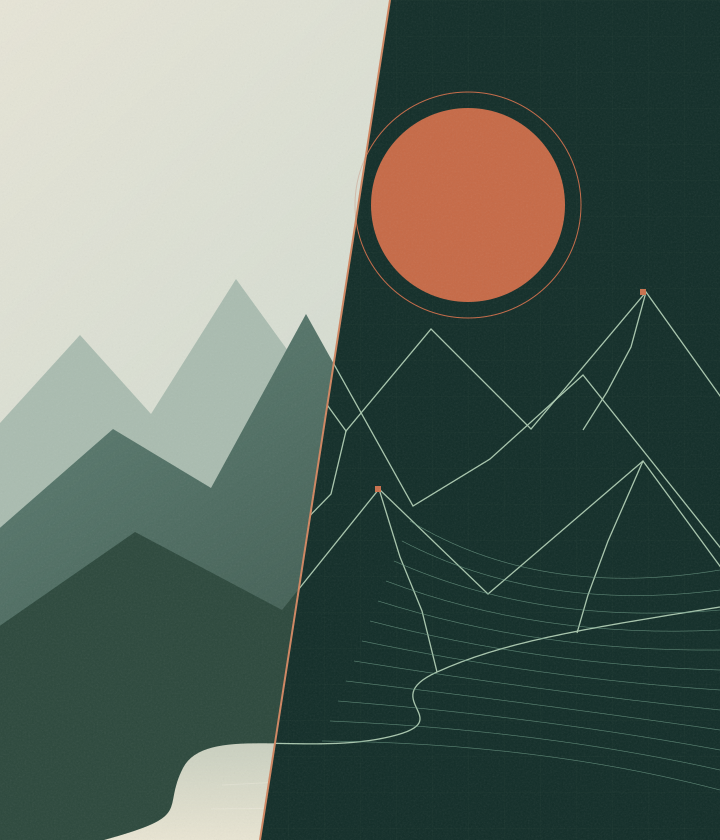
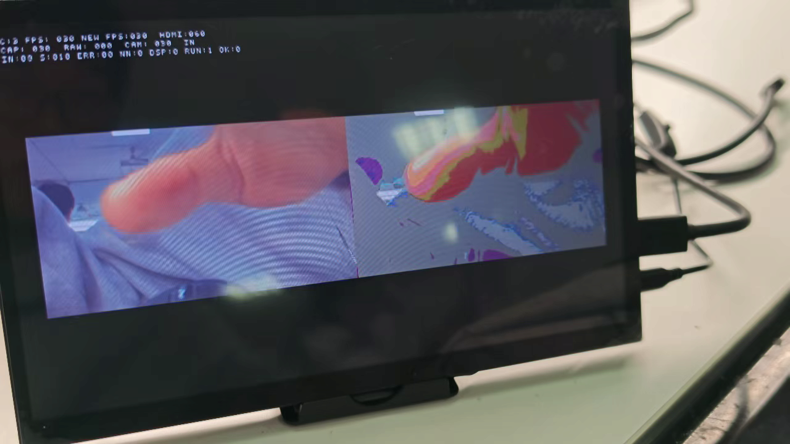
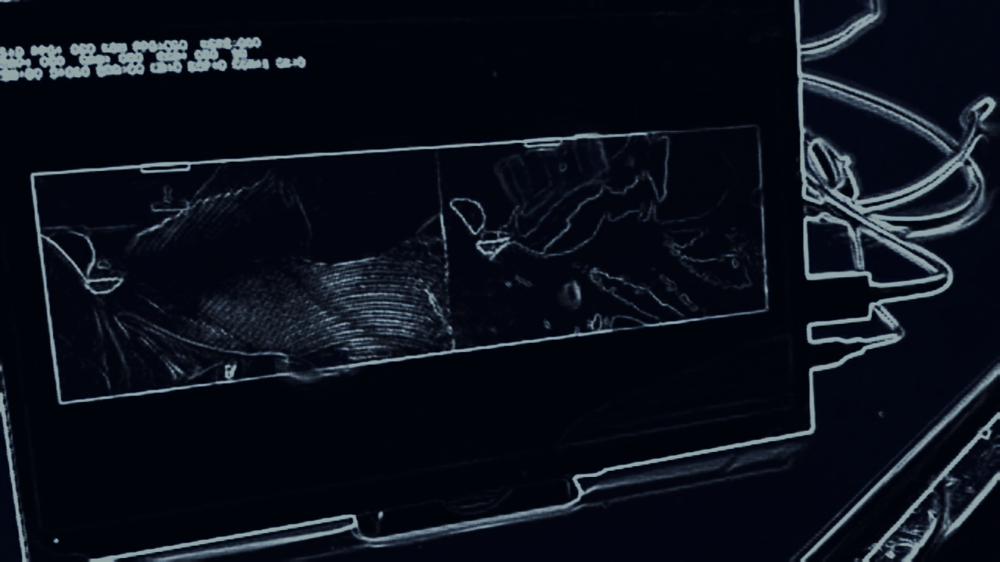

01 — 关于作品 / THE PROJECT
现实有万千模样，
每一帧，都能入画。
我们把视频采集、板端神经网络推理与原图对比展示，放进同一套 FPGA 系统。摄像头里的现场、HDMI 中的视频、从网口传来的照片，都可以成为创作素材。
在有限的片上资源中，计算与存储协同工作。多帧缓存、并行计算与显示预取承接画面流动；自动曝光与白平衡，帮助镜头更好地记录现实。
EFINIX FPGA核心图像处理与推理在板端完成
基于易灵思 FPGA 的智能视频绘画系统。
从现场的一瞬，到屏幕中的一幅，
让日常画面拥有不同的艺术表达。

WEBGL / BRAND SCENEFPGA · ON-BOARD INFERENCE我们把视频采集、板端神经网络推理与原图对比展示，放进同一套 FPGA 系统。摄像头里的现场、HDMI 中的视频、从网口传来的照片，都可以成为创作素材。
在有限的片上资源中，计算与存储协同工作。多帧缓存、并行计算与显示预取承接画面流动；自动曝光与白平衡，帮助镜头更好地记录现实。
三种入口，一套创作体验。
从开始到完成，网页清楚呈现任务进程。
选择素材与板上风格槽位
图像上传，板端进行神经网络推理
原图与结果并排或滑杆对比
校验通过后，保存结果与创作记录

原图 / ORIGINAL
板端返回并校验通过后，
这一幅作品将出现在这里。
拖入图片，或从本地选择 · 最高20MiB
网页显示任务进度；HDMI状态层取决于实际烧录版本
这里控制板上连续画面。图片任务的风格，在入画工作室中选择。
首版通过网口传图、USB串口控制。浏览器由本地服务与板卡交互。
网口与串口分别探测，不修改驱动或网卡配置。
操作后区分已接受与查询已确认。
尚无采样
HDMI 状态层请核对烧录文件；旧版没有动态OSD。源切换、ROI、光照与恢复效果仍需实板验收。
来自已验证的槽3任务。上方列出本应用的任务；本项是旧版历史实板样例。